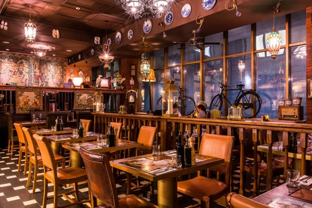

Hospoda na mýtince už existuje 25 let. Za tuhle dobu stihla nasbírat více jak 98% pozitivních hodnocení, takže věříme, že si pochutnáte i vy!
Jako klasiku od nás můžete čekat krásně chlazenou 12° Radegast
Určitě si také pochutnáte na naší svíčkové za 6€
Aby jste měli nějakou představu o náší restaurace, máme zde krátké instrukční video